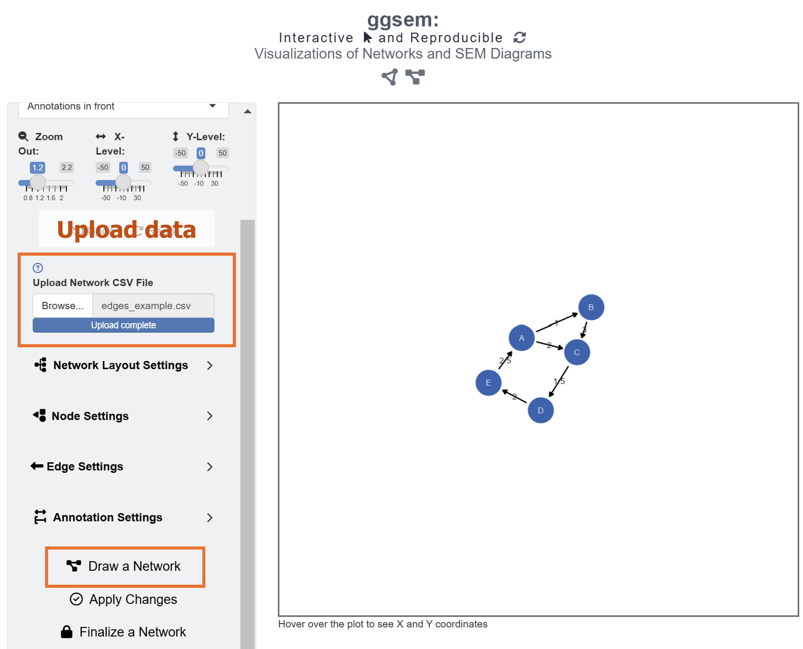
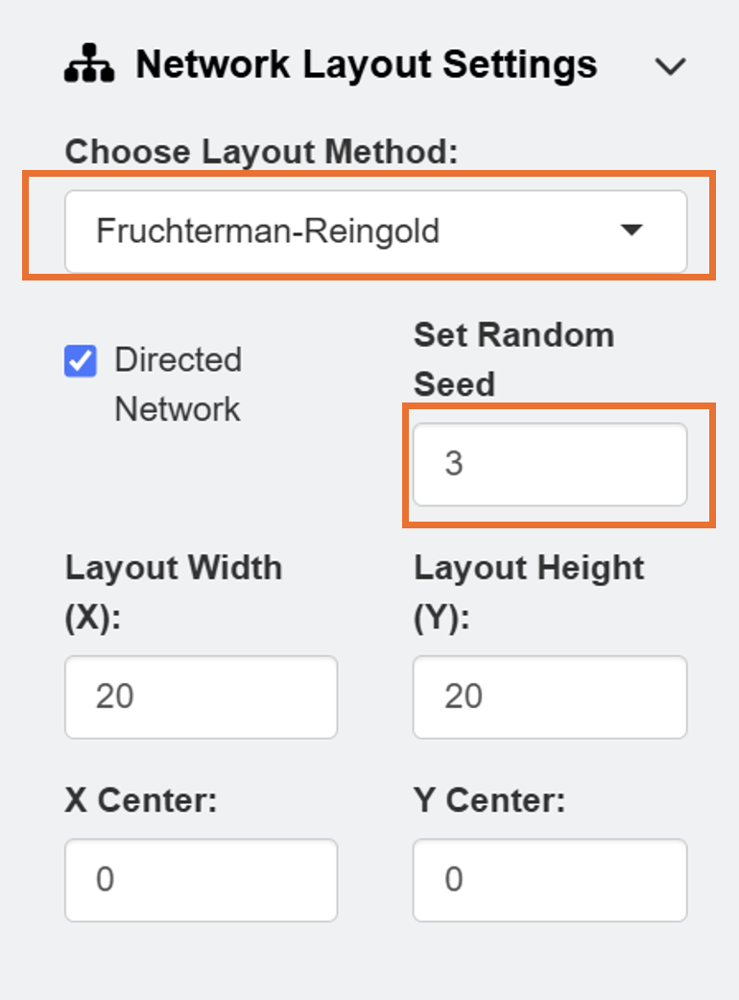
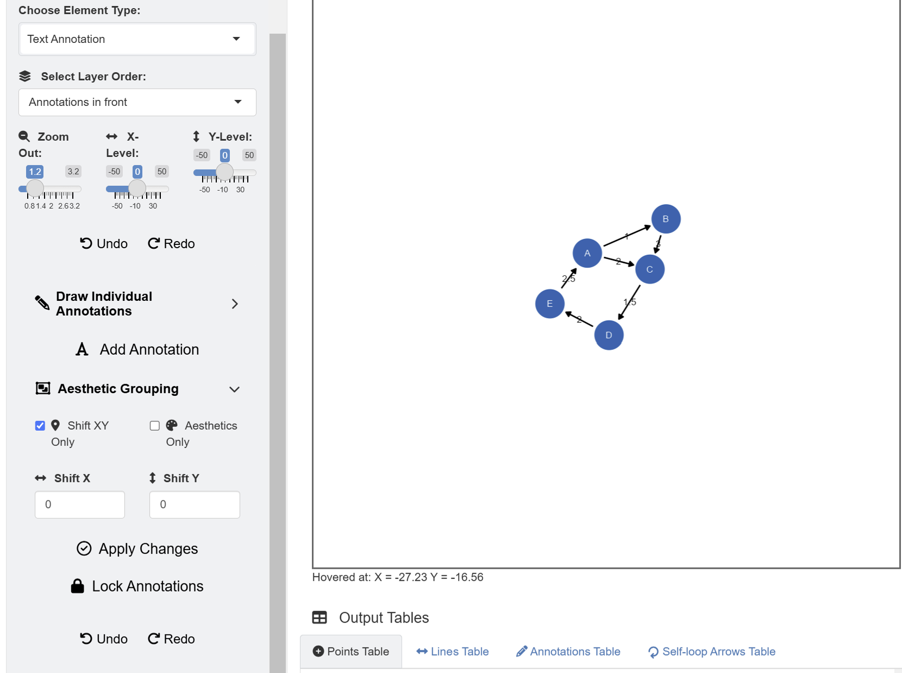
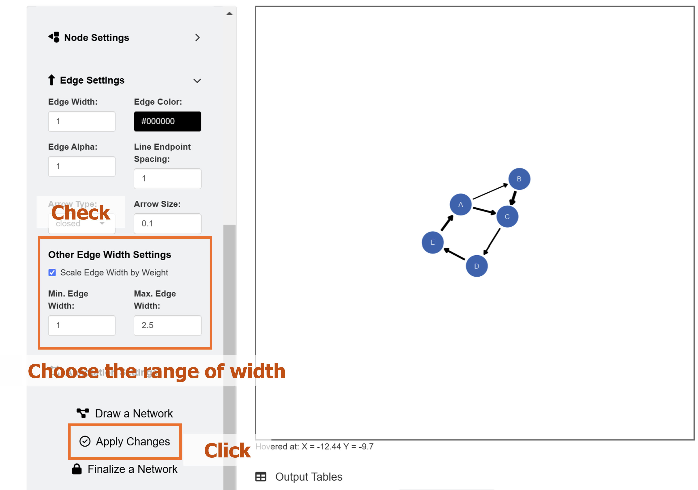
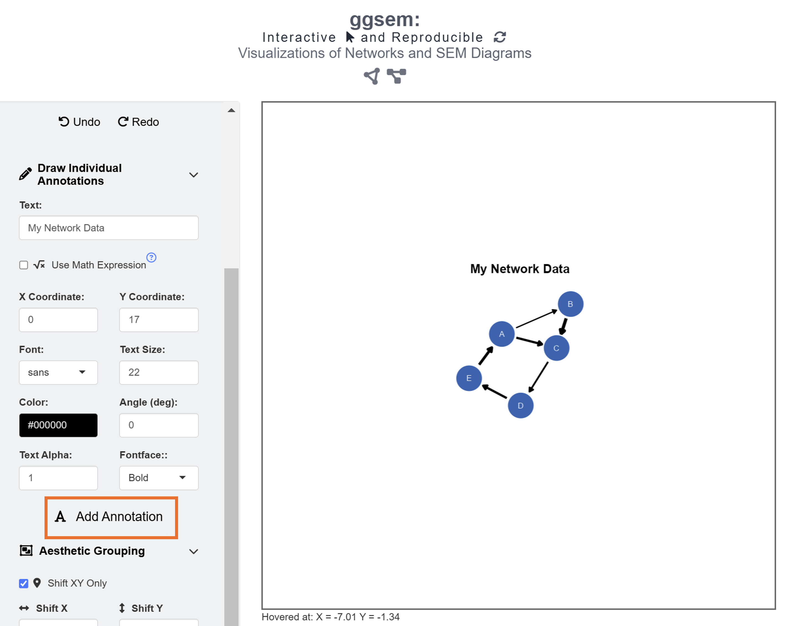
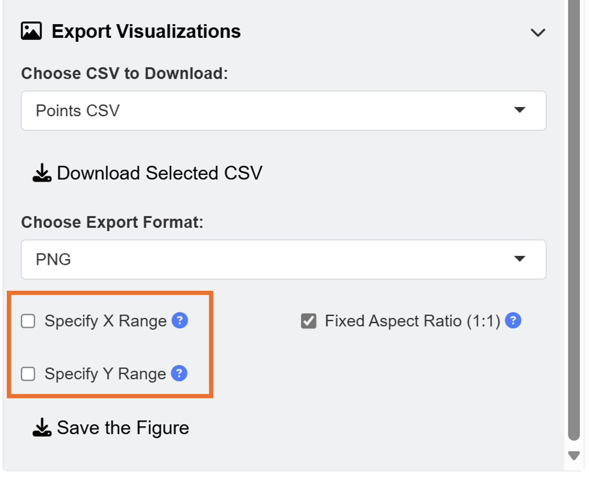
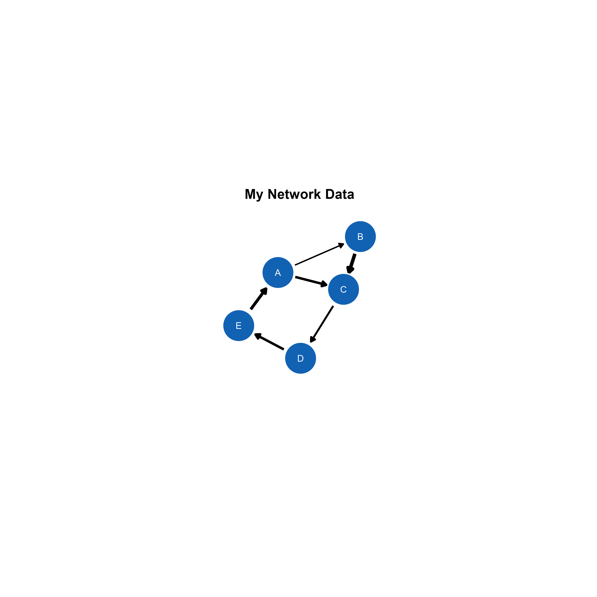
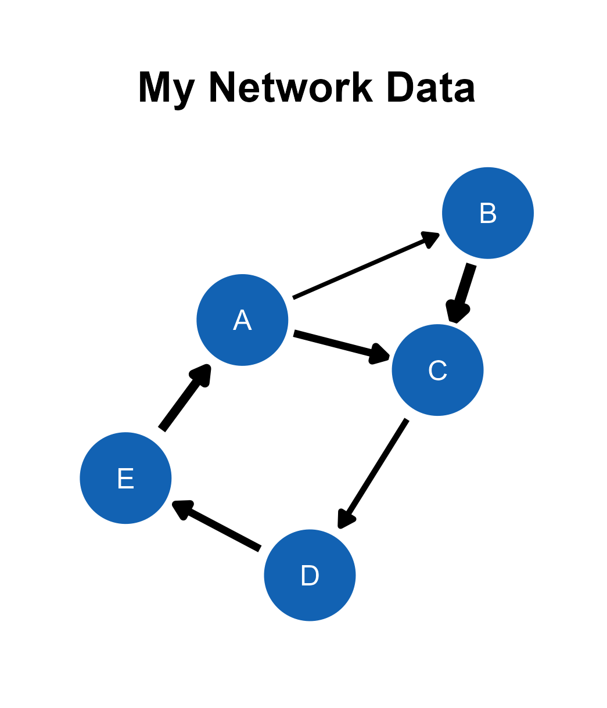

In this chapter, we will visualize network diagrams with data files.
Data Formats
The ggsem web application accepts two types of CSV files for plotting network diagrams: edge list and adjacency matrix. The examples are shown here.
library(tidyverse)
library(ggsem)
edge_list_w <- read.csv('https://www.smin95.com/edges_example.csv') # with edge weight
edge_list_nw <- read.csv('https://www.smin95.com/edges_example_nw.csv') # without weight
edge_list_w # column names
#> source target weight
#> 1 A B 1.0
#> 2 A C 2.0
#> 3 B C 3.0
#> 4 C D 1.5
#> 5 D E 2.0
#> 6 E A 2.5The edge_list_w data frame stores an edge list with
three columns (source, target, and
weight). Users should upload CSV files with these column
names for their data files to be properly recognized by the
ggsem web application. source contains nodes where
edges originate from, and target contains nodes where edges
arrive. weight denotes the strength of the connection.
The weight column can be missing, and the data file can
still be recognized by ggsem.
edge_list_nw
#> source target
#> 1 A B
#> 2 A C
#> 3 B C
#> 4 C D
#> 5 D E
#> 6 E AAnother format of data frame that ggsem recognizes is adjacency matrix, as shown below.
adj_matrix_symm <- read.csv('https://www.smin95.com/edges_example_adj_symm.csv')
adj_matrix_symm
#> X A B C D
#> 1 A 0 1 0 1
#> 2 B 1 0 1 0
#> 3 C 0 1 0 1
#> 4 D 1 0 1 0An adjacency matrix is an effective way to record relationships
between nodes in network analysis. Rows and columns denote nodes. If the
matrix is symmetric (such as adj_matrix_symm), then it
shows undirected relationships (no direction). Here, there is no weight.
0 represents no connection, while 1 represents a connection.
adj_matrix <- as.matrix(read.csv('https://www.smin95.com/edges_example_adj.csv',
row.names = 1, check.names = FALSE))
adj_matrix
#> A B C D E
#> A 0 0 0 0 1
#> B 1 0 0 0 0
#> C 1 2 0 0 0
#> D 0 0 2 0 0
#> E 0 1 0 2 0If the adjacency matrix is asymmetric, then it shows directed
relationships, such as adj_matrix. It can also contain
weight values. If network is weighted, then a value larger or smaller
than 1 can be used to denote the strength of the relationship. Here,
adj_matrix represents a directed graph with weights.
ggsem Application
Let’s launch the application and visualize the data.
ggsem()First, readers should download data from https://www.smin95.com/edges_example.csv. Just clicking the link should do the trick. Another way is to load the data in R and save it in your file directory.

After loading the data, users can select Network Layout Settings and set the random seed as 3 to reproduce the network diagram that I have created in this example.

The default color of the nodes is blue and the that of the node label is white. However, these can be changed using input menu in Node Settings and Edge Settings.
There are also options to use other types of layouts, such as Dimensionality Reduction which employs machine-learning algorithm. The app can also color nodes differently after performing clustering analysis using 10 different color palettes from packages such as RColorBrewer and smplot2.
After setting the random seed and uploading the data onto the ggsem app, click the Draw a Network button as shown in the figure above.

Since the data frame has a weight column, the network
diagram has edge labels. These graphical outputs can be accessed in the
table below the plotting space for Annotations. The rows
representing the edge labels have white color rather than red because
these are unlocked.

Their unlocked status (from their locked column) allows users to group them aesthetically and modify their X and Y positions at once. To do it, go to Text Annotation menu. Here, in this example, we will instead delete these elements, and represent the weights visually.

If we go back to the Network Data menu’s Edge Settings, we have the option to scale the width of edges by points. We will set the minimum edge width as 1 and maximum edge width as 2.5. To apply these aesthetic changes to the existing network diagram, click the Apply Changes button.
Remember that Apply Changes button changes
aesthetics of elements whose network column is set to
TRUE. So, other elements drawn separately (from individual
points to SEM diagrams) will not be affected.

Finally, we add text annotation My Network Data at X = 0, Y = 17 with text size = 22 and fontface = bold by clicking the Add Annotation button in the Text Annotations menu.
When saving as a png file, users can select the x range and y range of the figure to remove surrounding white space. You can choose to have asymmetric dimensions by unchecking the Fixed Aspect Ratio box when saving figures into images. However, in this example, we will remove it in script-based workflow by exporting the outputs as CSV files.

This is the final output, saved as png image from the ggsem application (for demonstration purposes), without removing any white space from the plotting space.

Modifying the Plot from ggsem app in ggplot2 Workflow
We upload the CSV files and store them in separate objects in R.
Then, we use these objects as input to visualize the outputs using
csv_to_ggplot().
points_data <- read_csv("https://www.smin95.com/points5.csv")
lines_data <- read_csv("https://www.smin95.com/lines5.csv")
annotations_data <- read_csv("https://www.smin95.com/annotations5.csv")
network_plot <- csv_to_ggplot(
points_data = points_data,
lines_data = lines_data,
annotations_data = annotations_data,
zoom_level = 1.2, # From the ggsem app
horizontal_position = 0, # From the ggsem app
vertical_position = 0
)We ensure that zoom_level.
horizontal_position and vertical_position
match the settings that were used in the ggsem app.
Then, white space can be removed using the
adjust_axis_space() function, which allows users to
asymmetrically remove white space. We remove 30% of the top space, and
35% in other areas surrounding the plot because we have already included
the plot’s title.
network_plot_b <- adjust_axis_space(network_plot, x_adjust_left_percent = -35,
x_adjust_right_percent = -35,
y_adjust_top_percent = -30,
y_adjust_bottom_percent = -35)We can save the output network_plot_b as an image file
using save_figure(). No additional argument is needed
because this function handles the figure dimensions automatically.
save_figure('network_plot_b.png', network_plot_b)